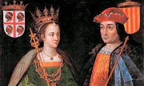

Introducción
En 1469, Isabel y Fernando se casaron, uniendo los reinos de Castilla y Aragón. Este matrimonio fue importante porque combinó dos de los territorios más grandes y poderosos de la península ibérica. Aunque seguían siendo dos reinos separados con sus propias leyes y costumbres, este vínculo ayudó a formar una alianza sólida que marcó el camino hacia la creación de una EspaÑa unificada.
El logro más destacado de su reinado fue el final de la Reconquista, un proceso que había comenzado siglos antes. En 1492, los Reyes Católicos lograron conquistar Granada, el último reino musulmán de la península ibérica. Este evento puso fin a más de 700 aÑos de presencia musulmana en la región.
Granada, gobernada por el sultán Boabdil, fue asediada durante aÑos por las tropas de Isabel y Fernando. Finalmente, el 2 de enero de 1492, Boabdil entregó las llaves de la ciudad, marcando el fin de la Reconquista. Para los monarcas, esta victoria no solo fue un logro militar, sino también un símbolo de unidad religiosa y territorial.La conquista de Granada permitió a los Reyes Católicos centrarse en nuevas metas, como la exploración y expansión fuera de la península.
